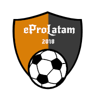

<nav class="navbar navbar-expand-lg navbar-dark back-color sticky-top">
  <a class="navbar-brand margin-right-mobile" routerLink="/"></a>
<button class="navbar-toggler margin-button" type="button" data-toggle="collapse" data-target="#navbarToggler" aria-controls="navbarTogglerDemo03" aria-expanded="false" aria-label="Toggle navigation">
  <span class="navbar-toggler-icon"></span>
</button>
  <div class="collapse navbar-collapse" id="navbarToggler">
    <ul class="navbar-nav mr-auto mt-2 mt-lg-0 text-center jutify-content-center back-responsive">
      <li class="nav-item ">
        <a class="nav-link btn btn-outline-dark text-white" routerLink="/" aria-pressed="true">Home</a>
      </li>
      <li class="nav-item">
        <a class="nav-link btn btn-outline-dark text-white" routerLink="/about">about</a>
      </li>
    </ul>
</div>
</nav>
<router-outlet></router-outlet>
